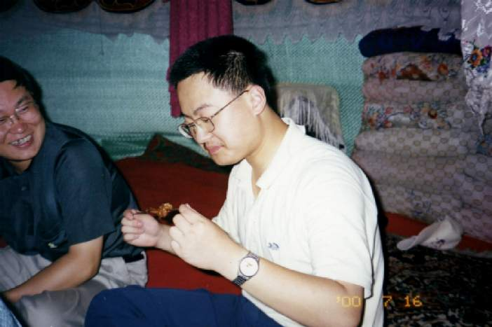

|
在新疆的这段时间是我一生中最快乐的时候，但是我却非常的遗憾，没有能和自己暗恋了5年的MM一同前往，只是希望以后能够有机会。我暗恋那个MM5年了，她可能不知道，高中三年，我一直没有机会见到她，只是在心中祈祷她能够过的快乐。当我知道她有了BF之后，感到非常难过，毕竟，我从前现在将来一直爱着她，可能我再也没有机会完成我小时候的梦想，牵着那个MM的手，和她走在一起。我是个胆小鬼，我没有勇气和她表白，所以我错失了机会，希望和我有一样的经历的人能够大胆一点。我真希望有勇气当面和她说“我爱你！！！刘佳！！！” By 永远爱着刘佳的DKman |
DKman暗恋了5年的MM的玉照，虽然伤心但是却无能为力。 |
|
|  |